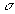

при известной дисперсии можно вычислить в MS Excel при помощи функции
Доверительный интервал для средней при известной дисперсии
Интервальной оценкой (с надежностью ) математического ожидания a нормально распределенного количественного признака Х при известном среднем квадратическом отклонении  или при объеме выборки n>30 генеральной совокупности служит доверительный интервал
где n — объем выборки, t — значение аргумента функции Лапласа Ф(t), при котором .
I способ. Значение аргумента функции Лапласа можно найти либо по соответствующим статистическим таблицам, либо вычислить в Excel по формуле
=НОРМСТОБР
II способ. Точность оценки 
при известной дисперсии можно вычислить в MS Excel при помощи функции